Resultados de aprendizaje y criterios de evaluacion que se evaluarán en esta unidad.
| Resultados de aprendizaje de la unidad didáctica: |
|---|
| RA. 1: Instala servicios de configuración dinámica, describiendo sus características y aplicaciones. |
| Criterios de evaluación de la unidad didáctica: |
|---|
| a) Se ha reconocido el funcionamiento de los mecanismos automatizados de configuración de los parámetros de red. |
| b) Se han identificado las ventajas que proporcionan. |
| c) Se han ilustrado los procedimientos y pautas que intervienen en una solicitud de configuración de los parámetros de red. |
| d) Se ha instalado un servicio de configuración dinámica de los parámetros de red. |
| e) Se ha preparado el servicio para asignar la configuración básica a los sistemas de una red local. |
| f) Se han realizado asignaciones dinámicas y estáticas. |
| g) Se han integrado en el servicio opciones adicionales de configuración. |
| h) Se ha verificando la correcta asignación de los parámetros. |
1 - Introducción
Con el crecimiento de las redes locales (LAN) y la expansión de internet, surgió la necesidad de un sistema más dinámico y flexible para la asignación de direcciones IP. Aquí es donde surge DHCP, que fue diseñado para superar las limitaciones de BOOTP, permitiendo la asignación automática, dinámica y más eficiente de las direcciones IP.
Los servicios DNS y DHCP son dos de los servicios más importantes en una red TCP/IP. Ambos permiten la configuración automática de los parámetros de red en los equipos clientes, lo que facilita la administración de redes y mejora la experiencia del usuario.
2 - DHCP (Dynamic Host Configuration Protocol)
El DHCP (Dynamic Host Configuration Protocol) es un protocolo de red que permite a los dispositivos obtener automáticamente una dirección IP y otros parámetros necesarios para conectarse a la red, como la máscara de subred, la puerta de enlace predeterminada y los servidores DNS. Esto elimina la necesidad de configurar manualmente cada dispositivo, facilitando enormemente la administración de redes grandes.
Antes del DHCP, las redes dependían del protocolo BOOTP (Bootstrap Protocol), que proporcionaba configuraciones básicas, como la asignación de direcciones IP. Sin embargo, BOOTP presentaba varias limitaciones:
- Configuración manual: Los administradores debían asignar manualmente una IP a cada dispositivo, lo que era tedioso y poco práctico en redes grandes.
- Asignación estática: Las direcciones IP eran fijas, lo que significaba que cada dispositivo mantenía la misma dirección aunque se desconectara, lo que no permitía un uso eficiente de las direcciones disponibles.
- Falta de flexibilidad: No estaba diseñado para gestionar redes dinámicas o móviles, como dispositivos que se mueven entre diferentes áreas de cobertura o redes.
2.1 Características principales de DHCP
-
Asignación automática de IPs:
DHCP permite la asignación dinámica de direcciones IP a los dispositivos cuando se conectan a la red. Esto asegura que no haya conflictos de direcciones IP duplicadas. -
Escalabilidad:
Ideal para redes grandes, donde administrar direcciones IP de manera manual sería inviable. Con DHCP, se pueden gestionar cientos o miles de dispositivos de manera eficiente. -
Facilidad de configuración:
Al automatizar la asignación de IPs y otros parámetros de red, los administradores pueden reducir significativamente el tiempo y esfuerzo que implicaría configurar manualmente cada dispositivo. -
Compatibilidad con diferentes tipos de asignación:
Asignación manual: El administrador asigna una IP específica a un dispositivo, aunque este se conecte de manera dinámica. Asignación automática: El servidor DHCP asigna una IP de forma permanente a un dispositivo desde el momento de su primera conexión. Asignación dinámica: El servidor DHCP asigna una IP por un tiempo limitado (lease time), tras lo cual la IP puede ser reasignada si no se renueva el arrendamiento. -
Administración centralizada:
Con un servidor DHCP centralizado, los administradores pueden gestionar y actualizar las configuraciones de red desde un solo lugar, en lugar de acceder a cada dispositivo de manera individual.
2.2 Componentes del funcionamiento de DHCP
La arquitectura de DHCP está formada por tres elementos principales: los servidores DHCP, los clientes DHCP y los agentes de retransmisión DHCP. La comunicación entre cliente y servidor se realiza a través de un intercambio de mensajes DHCP, mediante el cual el cliente obtiene y renueva tanto la concesión de su dirección IP como el resto de parámetros de configuración de red.
- Servidor DHCP
- Cliente DHCP
- Relé DHCP
2.2.1 Servidor DHCP
El servidor DHCP constituye la pieza central de todo el protocolo. Su cometido es entregar direcciones IP y demás parámetros de red a los equipos que las solicitan. Para ello, mantiene un conjunto de direcciones disponibles (conocido como pool) y controla las concesiones que se van otorgando a cada cliente.
Entre los parámetros que el servidor puede asignar a los clientes se encuentran:
Además, el servidor entrega parámetros como:
- Direcciones IP dinámicas y temporales tomadas de un pool, asignadas a cualquier cliente dentro de una subred determinada (concesión dinámica).
- Direcciones IP fijas asociadas a un cliente concreto según su dirección MAC (concesión estática).
- Máscara de subred
- Puerta de enlace predeterminada
- Servidor DNS
Asimismo, el servidor DHCP guarda de forma persistente la información de red entregada a los clientes. Puesto que DHCP nació como una evolución de BOOTP, los servidores DHCP también son capaces de atender solicitudes procedentes de este protocolo anterior.
Ejemplo de configuración de un servidor DHCP de un router Asus rt-ax58u"
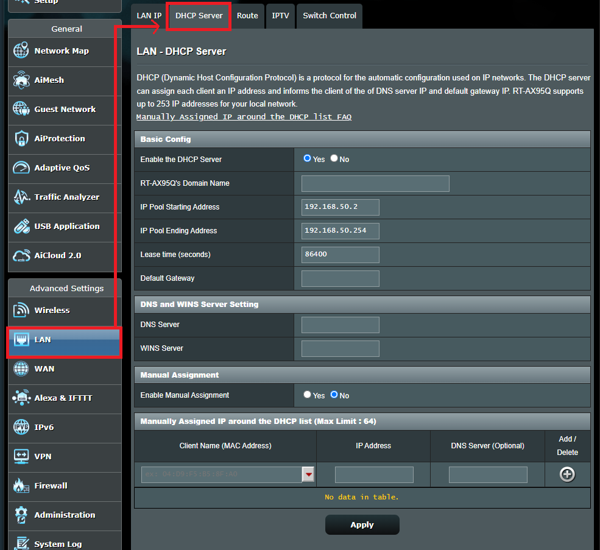
2.2.2 Cliente DHCP
Se considera cliente DHCP a cualquier dispositivo IP de la red configurado para comportarse como host y solicitar a un servidor DHCP los parámetros necesarios para funcionar, entre ellos su dirección IP.
Cuando un equipo actúa como cliente DHCP, obtiene su configuración TCP/IP (incluida la dirección IP) desde un servidor DHCP externo a través de cualquiera de sus interfaces físicas.
Para habilitar este comportamiento es necesario configurar una interfaz lógica del dispositivo, de modo que solicite la dirección al servidor DHCP correspondiente. Además, deben definirse los siguientes parámetros:
- El identificador de clase de proveedor.
- El tiempo de concesión.
- La dirección del servidor DHCP.
- El número de intentos de retransmisión.
- El intervalo entre reintentos.
Las concesiones obtenidas como cliente pueden renovarse posteriormente.
Ejemplo de asignación de parámetros
En la siguiente imagen se muestra un fragmento del resultado de la ejecución del comando ipconfig /all en un equipo con Windows 11, donde se puede observar que la dirección IP ha sido asignada por un servidor DHCP.
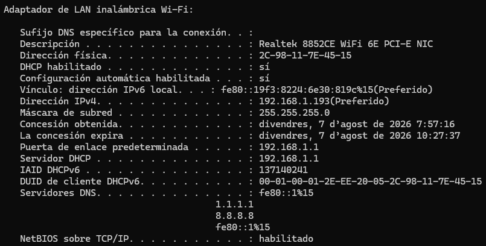
2.2.3 Relé DHCP
El agente de retransmisión DHCP es un host TCP/IP cuya función consiste en hacer de puente entre clientes y servidores DHCP cuando ambos se encuentran en subredes distintas, reenviando los mensajes correspondientes entre ellos. Gracias a este mecanismo, en redes de gran tamaño con múltiples subredes, basta con un único servidor DHCP para atender a todos los clientes, siempre que existan agentes de retransmisión situados en los routers que interconectan dichas subredes.
Un mismo dispositivo puede combinar ambos roles si gestiona distintas interfaces o subredes, pero no puede actuar simultáneamente como servidor DHCP y como agente de retransmisión DHCP para una misma interfaz o subred. La diferencia entre ambos roles es clara: el servidor responde directamente al cliente entregándole una dirección IP de su propio rango, mientras que el agente de retransmisión se limita a reenviar los mensajes DHCP entre el cliente y el servidor configurado, incluso cuando ambos pertenecen a redes IP distintas.
2.3 Modelo de cliente y servidor DHCP
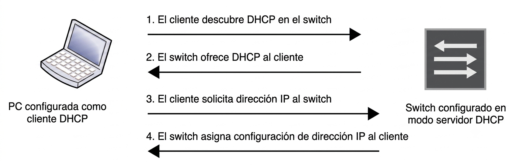
El proceso de asignación de direcciones IP mediante DHCP sigue un ciclo de cuatro pasos, conocido como DORA:
- Discover (Descubrimiento):
Cuando un dispositivo (cliente) se conecta a la red, envía un mensaje de broadcast llamado "DHCP Discover" para encontrar servidores DHCP disponibles. - Offer (Oferta):
Los servidores DHCP responden con un mensaje "DHCP Offer", que contiene una dirección IP disponible y otros parámetros de red. - Request (Solicitud):
El cliente selecciona una oferta y responde con un "DHCP Request" para aceptar la IP ofrecida. - Acknowledge (Confirmación):
El servidor DHCP responde con un mensaje "DHCP Acknowledge", confirmando que la IP ha sido asignada y que el dispositivo puede usarla.
2.4 Ventajas y desventajas de DHCP
Ventajas de DHCP
Reducción de errores humanos: Al automatizar el proceso, se minimizan los errores que pueden ocurrir durante la configuración manual de direcciones IP.
Optimización de recursos: La capacidad de reutilizar direcciones IP gracias al tiempo de arrendamiento ayuda a optimizar el uso del espacio de direcciones IP en la red.
Configuración remota: Los administradores pueden realizar cambios en la configuración de red sin necesidad de acceso físico a los dispositivos.
Desventajas de DHCP
Falta de control sobre la asignación de IPs: Al usar DHCP, puede haber menos control directo sobre qué dispositivos reciben qué IPs, a menos que se configure la asignación manual.
Punto único de fallo: Si el servidor DHCP falla, los dispositivos nuevos o que necesitan renovar su dirección IP no podrán conectarse a la red correctamente.
3 - Configuración de DHCP
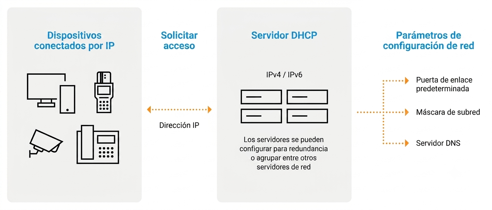
3.1 Configuración de un equipo a la red informática
Cualquier equipo que pertenece a una red requiere que se configure con unos parámetros mínimos, que son la dirección IP, la máscara y la puerta de enlace por defecto.
La dirección IP identifica al equipo de manera única, y la máscara permite determinar la red o subred en la que se encuentra el equipo.
Con estos dos parámetros es suficiente para tener conectividad en la red. Si se quiere disponer de acceso fuera de la red propia (por ejemplo, a Internet o al resto de la red corporativa), es necesario definir también la puerta de enlace predeterminada.
Aparte de la configuración básica, los equipos pueden necesitar (y de hecho lo necesitan) más parámetros de configuración como, por ejemplo: el nombre del host, el servidor DNS, el archivo de inicio a descargar, etc.
3.2 Asignación de IP
Todo equipo de red necesita disponer de una dirección IP que lo identifique de manera única en la red.
Ejemplo de configuración de red de un equipo doméstico:
La mayoría de los usuarios disponen en casa de un equipo (o más) conectados a un router que proporciona el acceso a Internet. Este equipo está configurado como cliente DHCP y, al iniciarse, recibe la configuración de red del router. Puedes comprobar en tu casa qué configuración tienes. Una configuración de ejemplo podría ser:
3.2.1 Dirección IP estática
Una dirección IP estática es una dirección que se asigna manualmente a un dispositivo y permanece fija a lo largo del tiempo. A diferencia de una IP dinámica (asignada por DHCP), la dirección estática no cambia, lo que es útil en casos donde se necesita una IP constante, como en servidores o dispositivos críticos.
Características de las direcciones IP estáticas:
- Permanencia: La dirección no cambia, a menos que el administrador lo decida.
- Configuración manual: Las direcciones deben asignarse manualmente en el dispositivo o servidor de red.
- Uso en dispositivos críticos: Suelen asignarse a servidores, impresoras, routers, cámaras de seguridad y otros equipos que requieren estabilidad.
Ventajas de las IP estáticas:
- Acceso remoto constante: Es más sencillo acceder a dispositivos de forma remota sin preocuparse por cambios de IP.
- Estabilidad en servicios de red: Es ideal para servicios que requieren una dirección IP fija, como servidores de correo, web o bases de datos.
- Configuración de reglas de red: Facilita la creación de reglas para firewalls o VPN, ya que la dirección es predecible.
Desventajas de las IP estáticas:
- Conflictos de IP: Si no se gestiona adecuadamente, puede haber conflictos cuando dos dispositivos intentan usar la misma dirección.
- Mayor carga administrativa: Requiere mayor trabajo manual, lo que aumenta la posibilidad de errores en redes grandes.
- Menor flexibilidad: En redes con muchos dispositivos que se conectan y desconectan, las direcciones estáticas son menos prácticas.
3.2.2 Dirección IP dinámica
Una dirección IP dinámica es una dirección que se asigna automáticamente a un dispositivo por un servidor DHCP y puede cambiar con el tiempo. Esto permite una gestión más eficiente de las direcciones IP, especialmente en redes grandes o con muchos dispositivos que se conectan y desconectan.
Características de las direcciones IP dinámicas:
- Asignación automática: El servidor DHCP asigna la dirección IP sin intervención manual.
- Temporalidad: La dirección puede cambiar después de un período de tiempo (lease time) o cuando el dispositivo se reconecta a la red.
- Uso eficiente del espacio de direcciones: Permite reutilizar direcciones IP, optimizando su uso en redes con muchos dispositivos.
Ventajas de las IP dinámicas:
- Facilidad de administración: Reduce la carga administrativa al eliminar la necesidad de asignar direcciones manualmente.
- Flexibilidad: Ideal para redes con dispositivos que se conectan y desconectan frecuentemente, como laptops, smartphones y tablets.
- Prevención de conflictos de IP: El servidor DHCP gestiona las direcciones, minimizando el riesgo de conflictos.
Desventajas de las IP dinámicas:
- Cambio de dirección: La dirección IP puede cambiar, lo que puede ser problemático para servicios que requieren una IP constante.
- Dependencia del servidor DHCP: Si el servidor falla, los dispositivos pueden no obtener una dirección IP válida.
- Menor control sobre la asignación: Puede ser más difícil rastrear qué dispositivo tiene qué dirección IP en un momento dado.
4 - Tarea RA1-def-1 - Instalación y configuración de un DHCP con Windows Server en AWS
4.1 Objetivo de la práctica
- Desplegar un servidor DHCP en Windows Server sobre AWS con virtualización anidada.
- En este primer paso instalaremos y configuraremos el rol DHCP Server en Windows Server, y observaremos en tiempo real cómo varios equipos cliente obtienen su configuración IP (DHCPDISCOVER → OFFER → REQUEST → ACK), reservas, exclusiones, ámbitos (scopes), opciones de ámbito (DNS, puerta de enlace, etc.).
4.2 Limitaciones de AWS para el despliegue de un servicio DHCP
Dentro de una VPC (virtual private cloud) de AWS, el tráfico broadcast/multicast no se propaga entre instancias.
DHCP depende de broadcasts (255.255.255.255), así que un cliente en una instancia EC2 nunca "verá" un DHCPOFFER de otra instancia EC2 en la misma subred.
Cada tarjeta de red ENI (Elastic Network Interface) recibe su IP exclusivamente del DHCP interno de AWS, que no se puede sustituir.
Solución: Montar toda la práctica dentro de una sola instancia EC2, usando un hipervisor anidado (Hyper-V) donde sí existe broadcast real entre las VMs virtuales.
Novedad Feb 2026
- Desde el 16 de febrero de 2026, AWS soporta oficialmente virtualización anidada en instancias EC2 normales (no metal). ctica.
- Familias soportadas actualmente:
C8i,M8i,R8i,C8id,R8id,M8id,C8i-flex,R8i-flex,M8i-flex,X8i,C7i,R7i,M7i,C7id,R7id,M7id,C7i-flex,R7i-flex,M7i-flex,I7i. - Solo procesadores Intel (no Graviton). Hipervisores L1 soportados: Hyper-V y KVM.
4.3 Arquitectura del laboratorio
Diagrama de la infraestructura de red
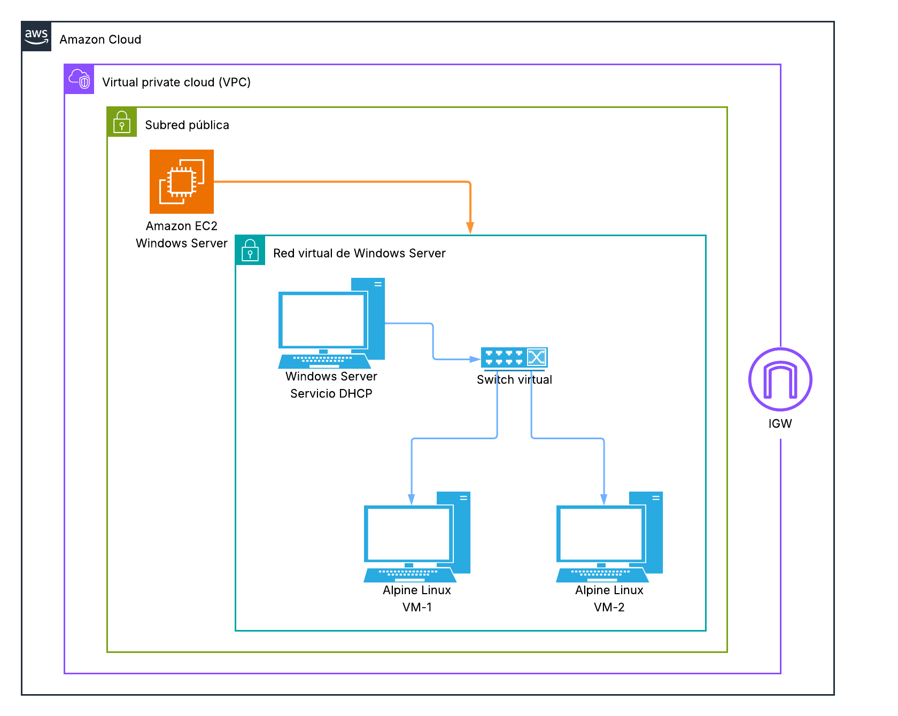
Instancia EC2 (m7i.large, 100GB, Windows Server 2025 Base, Virtualización HVM)
│
├── Hyper-V
│ │
│ ├── Switch virtual "Interno" (Internal / Private) sin salida a la VPC
│ │
│ ├── Windows Server 2025 Base → Rol DHCP Server
│ │
│ ├── VM-1: Alpine Linux (cliente) → IP por DHCP
│ └── VM-2: Windows 10/11 (cliente) → IP por DHCP
│
Con el switch en modo Interno/Privado (no "Externo"), el broadcast DHCP se queda encerrado dentro del propio hipervisor Hyper-V.
4.3.1 Activar / comprobar el nested virtualization en una instancia YA existente
Para ello, nos conectaremos a la instancia de Windows Server creada en prácticas anteriores.
Comprobación del Nested Virtualization
-
Abrimos el Windows Powershell y escribimos el siguiente comando
-
Si Obtenemos el siguiente resultado ([ ] vacío + Available) significa que está disponible por no instalado.
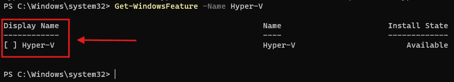
Activar la virtualización de la CPU por la consola de AWS
-
Abrimos el powershell de AWS y escribimos los siguientes comandos:
Nota IMPORTANTE: Cambiar la id por la id de vuestra instancia.# 1. Parar la instancia (aunque la acabes de arrancar) aws ec2 stop-instances --instance-ids i-069fe851e6325d765 # 2. Esperar a que quede realmente parada aws ec2 wait instance-stopped --instance-ids i-069fe851e6325d765 # 3. Activar nested virtualization con el comando correcto aws ec2 modify-instance-cpu-options \ --instance-id i-069fe851e6325d765 \ --nested-virtualization enabled # 4. Arrancarla de nuevo aws ec2 start-instances --instance-ids i-069fe851e6325d765 -
Lanzar el powershell de AWS.
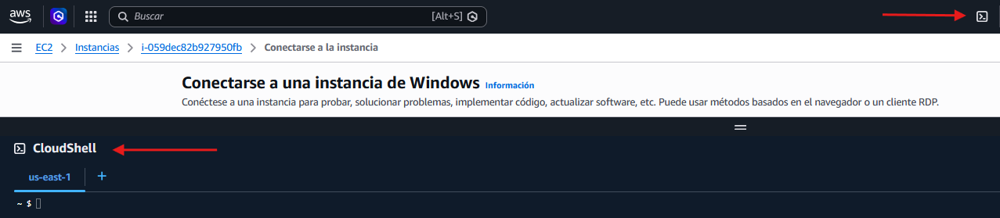
- Comandos en ejecución.
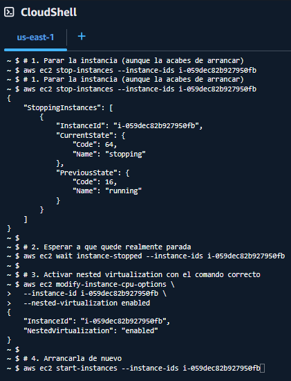
Activación del Nested Vitualization
- Activaremos la virtualización anidada con el siguiente comando.
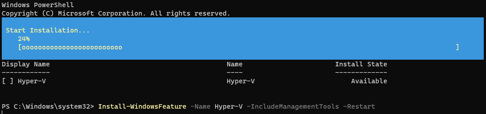
- Como hemos incluido la opción de reinicio del sistema, perderemos la conexión con la instancia...
Comprobación del Nested Virtualization por CLI
- Nos conectamos de nuevo a la instancia. Abrimos el Windows Powershell y escribimos el siguiente comando
- Si nos aparece [X] Hyper-V, significa que el servicio se ha instalado correctamente.
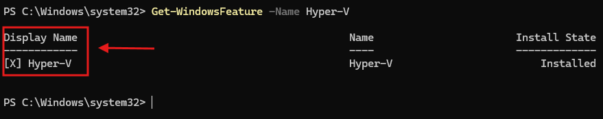
Comprobación del Nested Virtualization en la consola de Windows Server
- Abrimos el Server Manager.
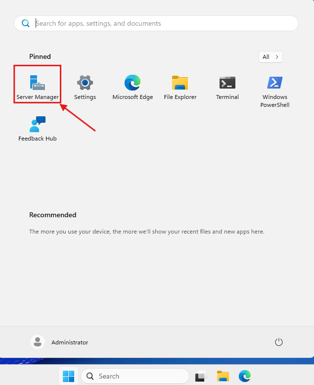
- Seleccionamos Local Server → Services → buscamos hyper-V
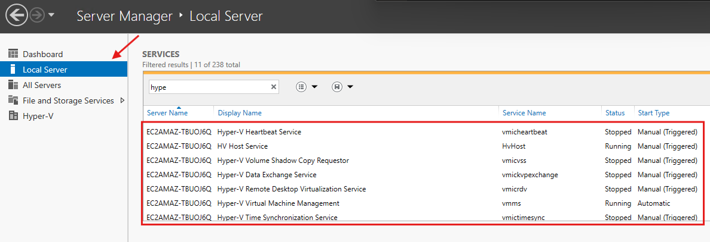
4.3.2 Crear el switch virtual interno
-
Vamos a Hyper-V Manager → Virtual Switch Manager:
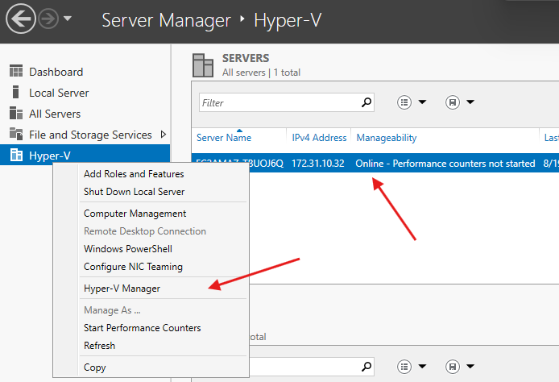
-
Luego seleccionamos → New virtual network switch
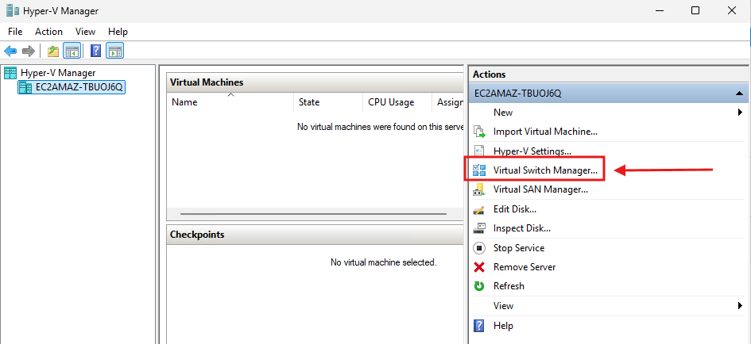
-
Tipo: Internal. Esto asegura que el tráfico DHCP nunca sale hacia la red de AWS ni a otras instancias. También seleccionaremos Enable virtual LAN id.... De ese modo el adaptador de red virtual aparecerá con cualquier otro adaptador.
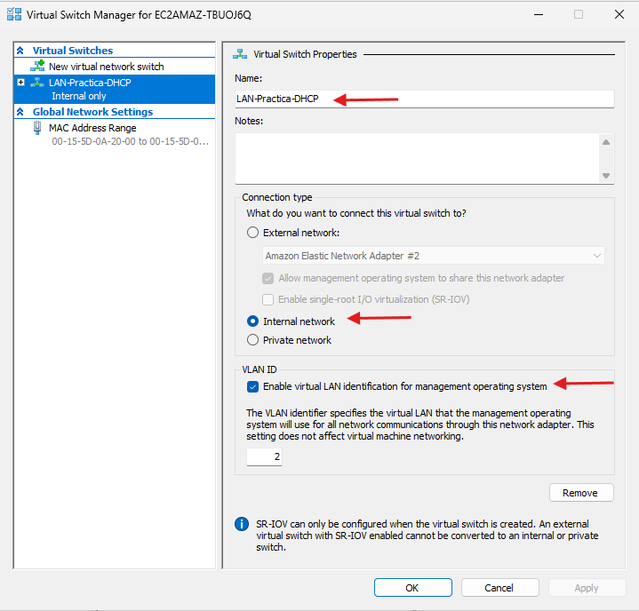
Después de ipconfig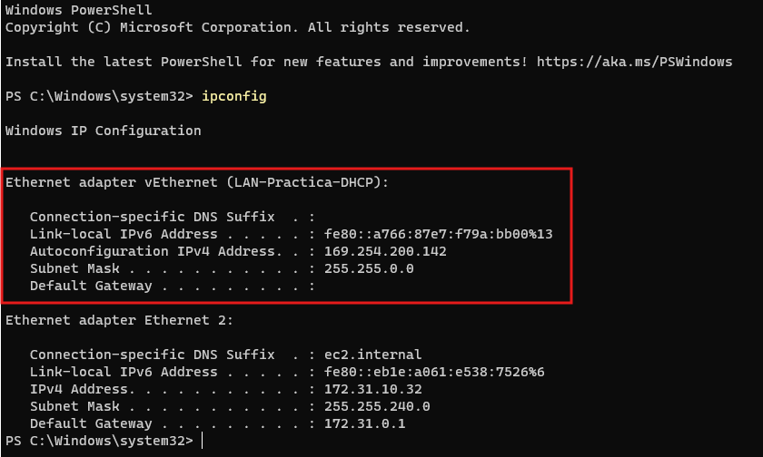
-
Si volvemos a Hyper-V → SERVERS → Refrescamos el estado del servidor (solo tenemos uno) veremos que tenemos unaIP interna del servidor en nuestra red virtual privada, siendo la otra IP, la IP de la instancia dentro de la VPC de AWS.
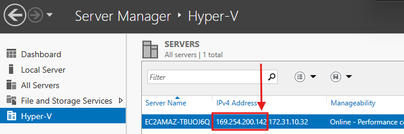
4.3.3 Configurar los parámetros de red
- Como podemos ver en las capturas anteriores, el servidor tiene asignada la IP 169.254.200.142.
- Esto se debe a la falta de un servidor DHCP en la red virtual, lo que provoca la activación automática de una dirección APIPA (Automatic Private IP Addressing).
-
Hasta que no despleguemos el servidor DHCP, la asignación de IPs en la red privada no podrá realizarse de forma automática, por lo que deberemos configurar manualmente la IP del servidor.
-
Nos dirigimos a Local Server → Properties → vEthernet
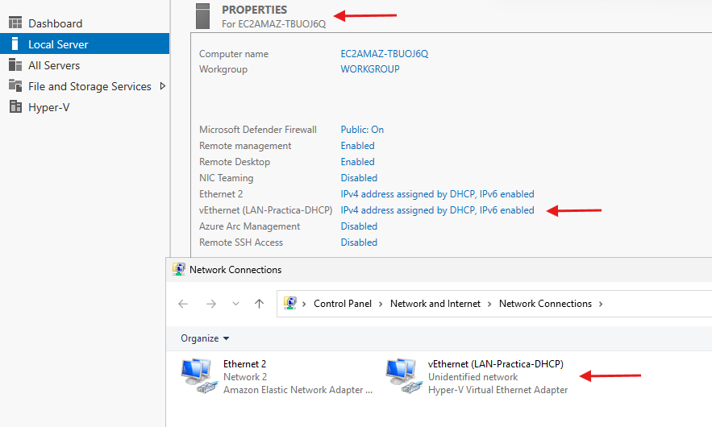
-
Una vez encontrado el adaptador, configuraremos el protocolo TCP/IPv4.
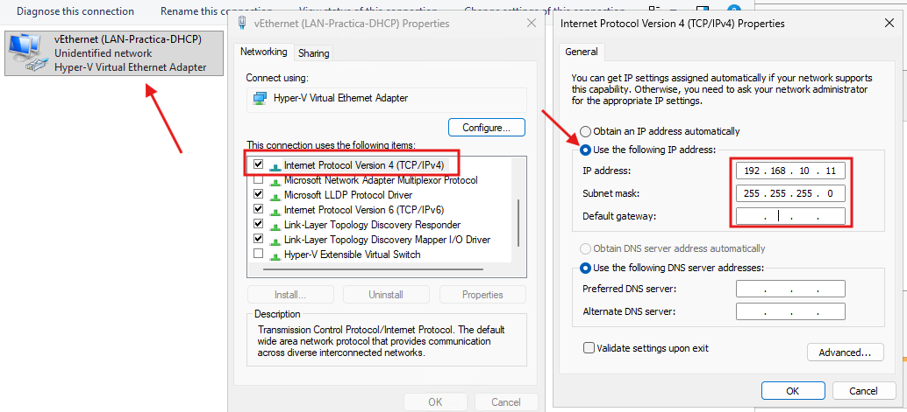
-
Refrescamos la información y ya tendremos la IP esperada para nuestro servidor.
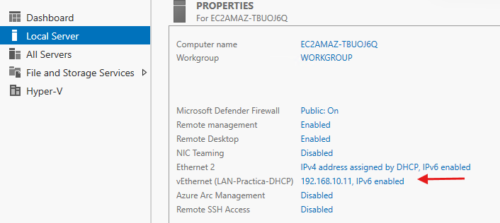
-
Con esto ya tendremos montada la red virtual de Windows Server. El siguiente paso será montar el servicio DHCP sobre el servidor de Windows Server.
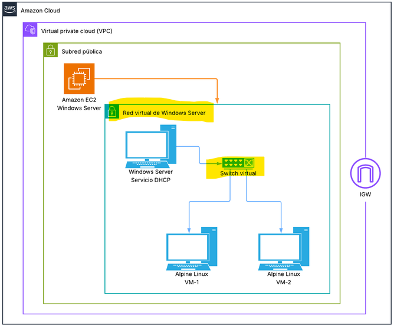
4.4 Instalación y configuración del rol DHCP en el host (Windows Server anfitrión)
4.4.1 Instalar el rol DHCP
- Nos dirigimos a la consola de Windows Server y seleccionamos Add roles and features.
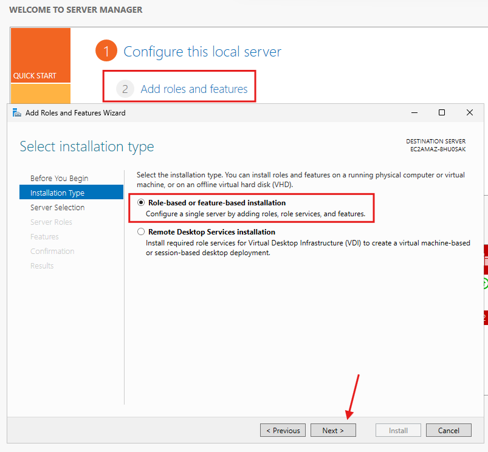
- En server roles seleccionamos el servicio que queremos implementar.
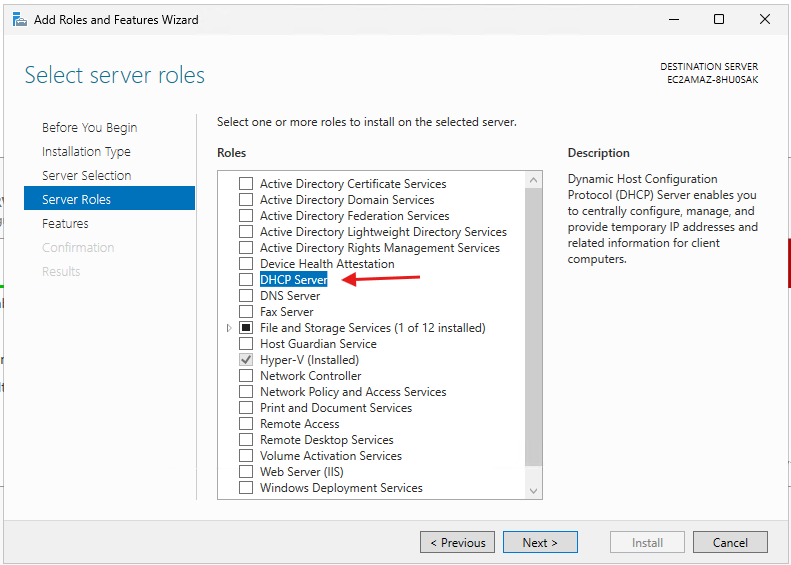
- Confirmamos las caracteristicas necesarias para el servivio DHCP.
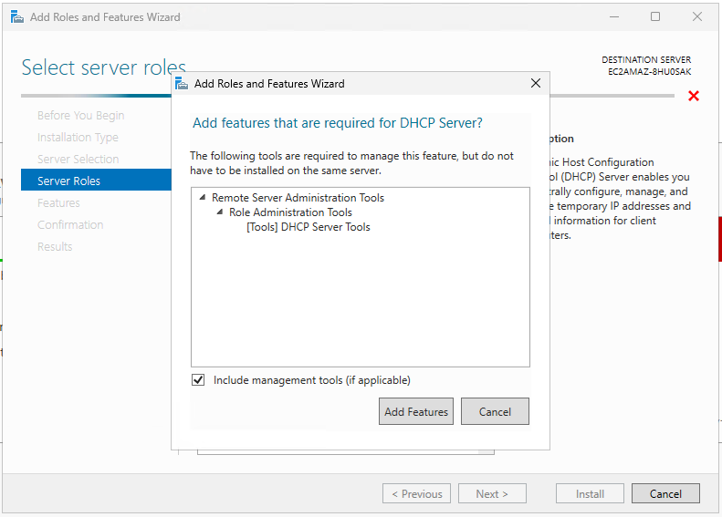
- Recordatorios: De nada sirve lanzar un servicio sin un planteamiento previo.
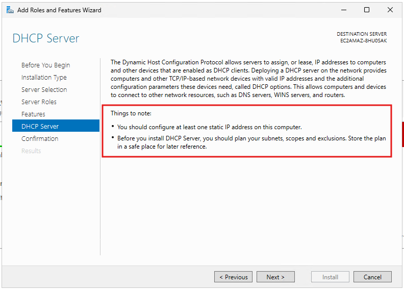
- La instalación del servicio DHCP no requiere reinicio pero, lo ticamos de todos modos.
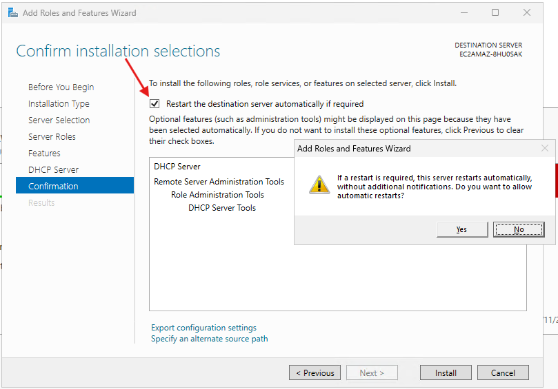
- Se inicia la instalación.
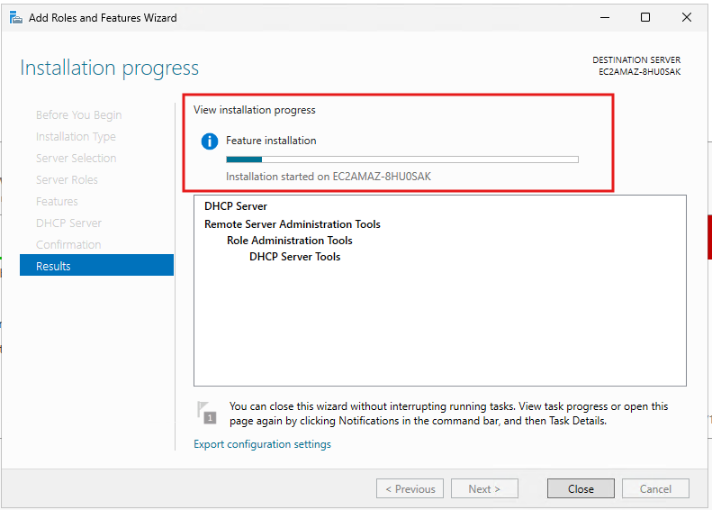
- Al final el instalador dirá que el DHCP requiere configuración. Lo haremos en el siguiente paso. De momento cerramos el asistente.
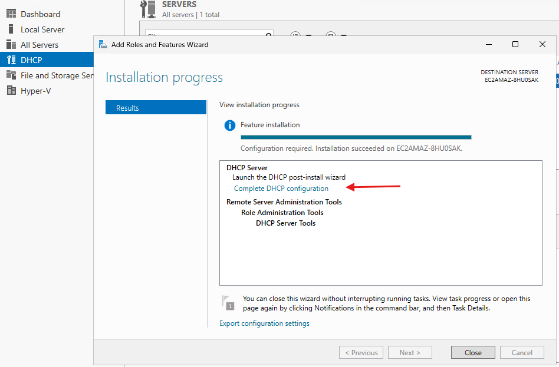
4.4.2 Configurar el rol DHCP
- Volvemos al panel de control dónde veremos que tenemos el servicio DHCP disponible.
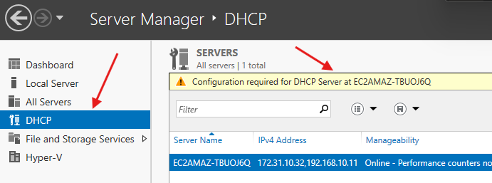
- Completamos la configuración del DHCP.
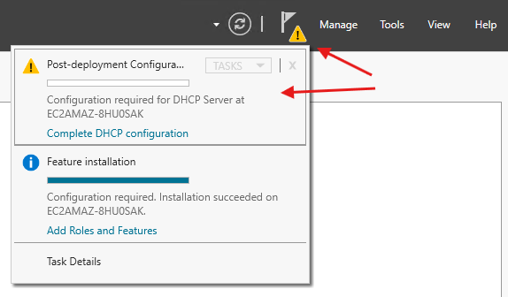
- Hacemos un commit.
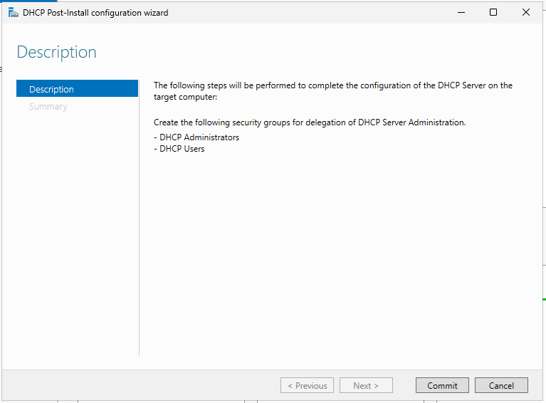
- Vamos al panel de control del DHCP y comprobamos que el servicio sobre IPv4 y IPv6 está implementado.
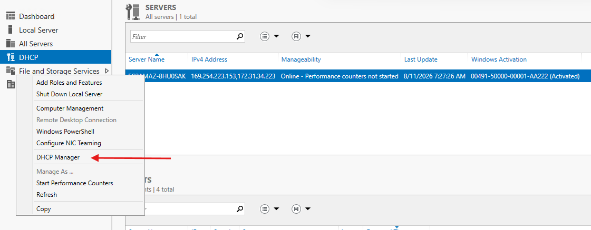
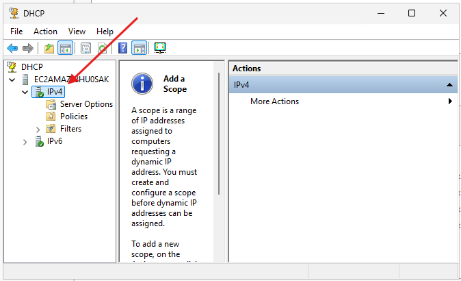
4.4.3 Crear el ámbito (scope)
Una vez instalado el rol de servidor DHCP, el siguiente paso es crear un ámbito (scope), es decir, el rango de direcciones IP que el servidor podrá asignar automáticamente a los equipos de la red. En este apartado configuraremos dicho rango junto con los parámetros básicos necesarios (máscara de subred, puerta de enlace, duración de la concesión, etc.) para que los clientes de la red privada puedan obtener su configuración de red de forma automática.
- Vamos a la consola de configuración de DHCP.
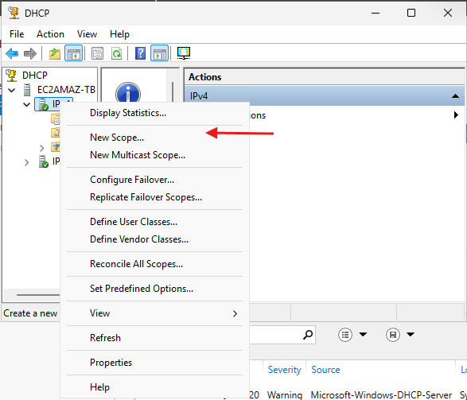
- Seleccionamos new scope y damos un nombre al ámbito.
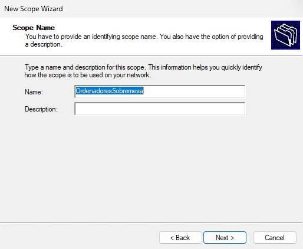
- Estableceremos un rango de direcciones suficiente, siempre en función de nuestras necesidades. También tendremos que tener en cuenta dejar fuera del rango DHCP las direcciones IP reservadas para los sistemas que requieren IP estática, como switches, servidores de dominio, servidores DHCP, impresoras o sistemas de almacenamiento en red. Por último, deberemos reservar otro rango de direcciones IP para los dispositivos no anclados a la red, como tabletas, ordenadores portátiles o teléfonos móviles.
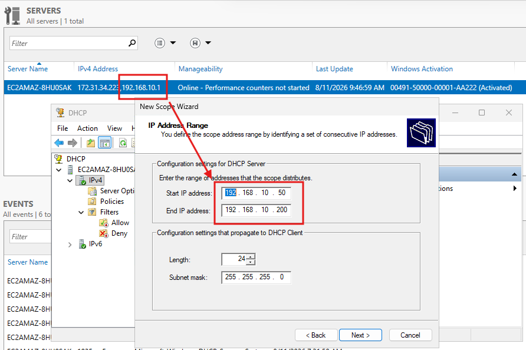
- Dejamos en blanco la pantalla de Add Exclusions and Delay.
- Configurar la duración del lease (lease duration) es decir, el tiempo durante el cual un cliente mantendrá asignada una dirección IP antes de tener que renovarla. Este valor debe ajustarse según el tipo de red y de dispositivos que la componen: en redes estables con equipos fijos conviene establecer una duración larga (varios días), mientras que en redes con gran cantidad de dispositivos móviles o temporales resulta más adecuado un lease corto, ya que permite liberar y reutilizar las direcciones IP con mayor frecuencia. En nuestro caso, estableceremos una duración de lease de 8 días (valor por defecto).
- En Configure DHCP Options seleccionamos la opción No para configurarlo más adelante.
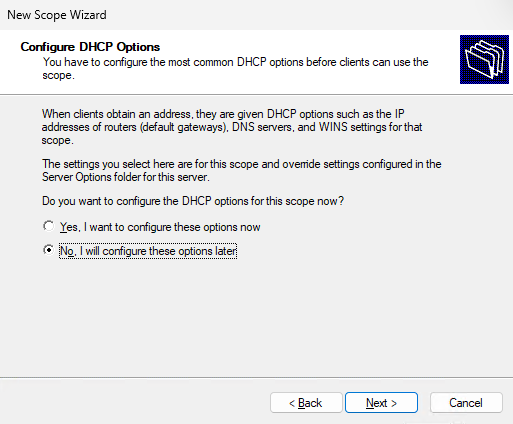
- En post installation no saldrá un aviso de reiniciar el servicio.
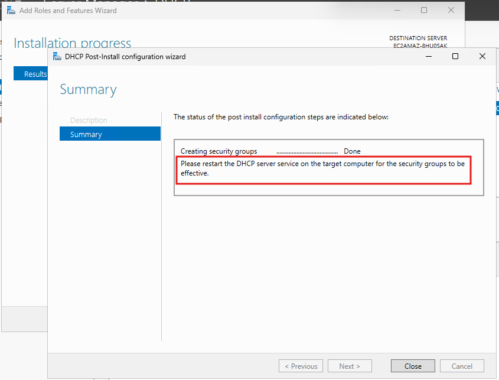
- Reiniciamos el servicio.
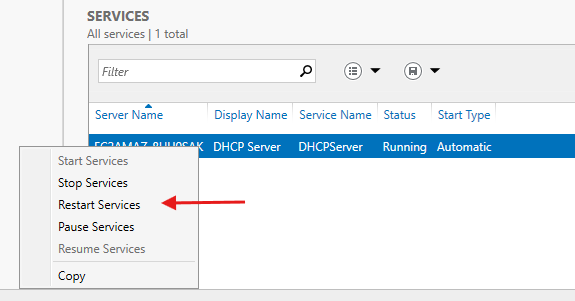
4.4.4 Activar el scope
- Vamos a la consola de DHCo y veremos nuestro scope en rojo (desactivado).
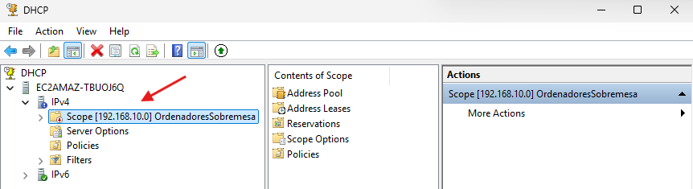
- Haremos clic derecho y lo activaremos.
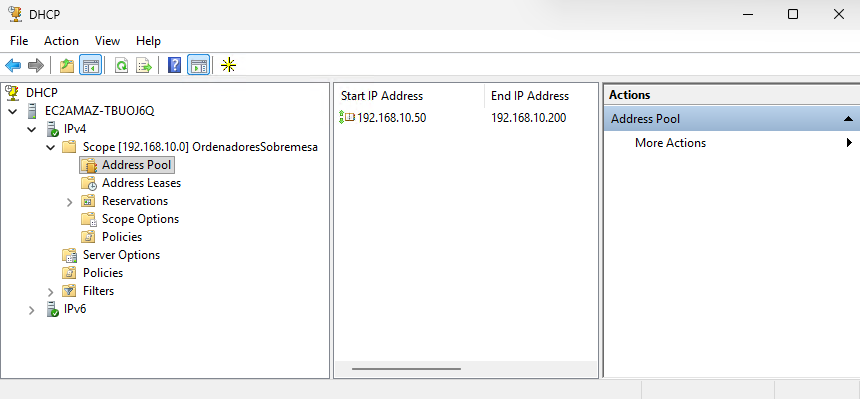
4.4.5 Configurar opciones del ámbito
Las opciones de ámbito son parámetros de configuración adicionales que el servidor DHCP puede asignar a los clientes DHCP por ejemplo el DNS y la puerta de enlace (enrutador).
- Vamos a scope y seleccionamos Configure Options...
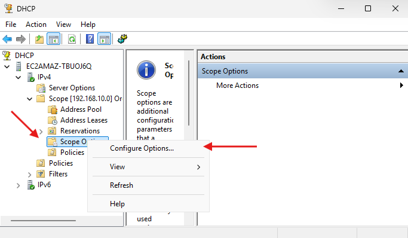
- Buscamos la opción 003 Enrutador, que permitirá a las máquinas conectadas a la red virtual acceder a Internet. No configuraremos el DNS, ya que lo veremos en otra unidad, ni definiremos un controlador de dominio, puesto que la implementación de Active Directory se tratará más adelante y queda fuera del alcance de este apartado.
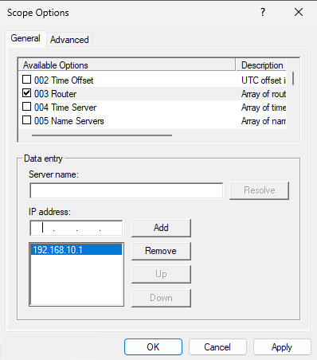
- Comprobamos que la option se ha guardado correctamente.
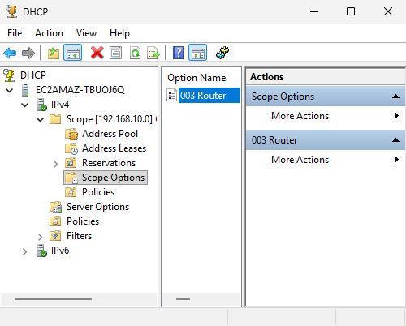
4.4.6 Best Practices analyzer
No es una herramienta especifica del servicio DHCP sino de todo el ecosistema de Windows Server.
- Vamos a BPA → TASKS → Start BPA Scan
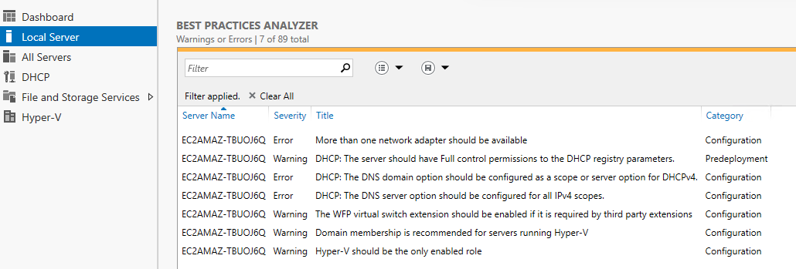
Nota
Algunos de los errores o advertencias que aparecen se deben a las limitaciones de nuestra infraestructura. No los tendremos en cuenta.
4.4.7 Comprobar el servicio por CLI
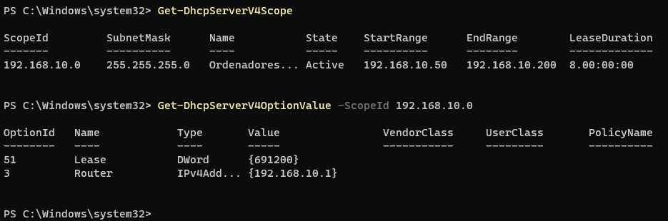
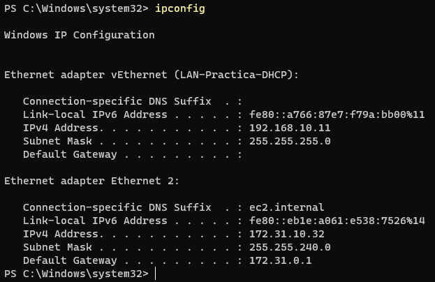
- Con esto ya tendremos montada la red virtual de Windows Server y el servidor DHCP. El siguiente paso será montar clientes con Alpine Linux y comprobar si las asignaciones de IP y el acceso a internet se hace correctamente.
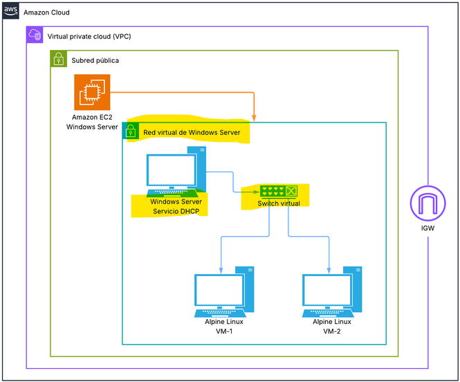
4.5 Creación de las máquinas virtuales cliente
- Con RAM limitada (
m7i.largecon 8 GiB), lo más eficiente es que el propio host Windows Server actúe como servidor DHCP y usar Hyper-V solo para las VMs cliente. - Como cliente, Alpine Linux es la opción más ligera (256–512 MB por VM) y perfectamente válida para ver el proceso DHCP completo.
4.5.1 Creación de las carpetas de trabajo
Crearemos dos carpetas de trabajo: ISOs y VMs.
- ISO contendrá los archivos .iso de los sistemas operativos que descargaremos.
- VM contendrá los discos duros de las máquinas virtuales que lanzaremos.
La creación de las carpetas se puede realizar tanto desde el explorador de archivos como en línea de comandos:
New-Item -Path "C:\ISO" -ItemType Directory -Force
New-Item -Path "C:\VM" -ItemType Directory -Force
4.5.2 Descargar el ISO
- Como ya hemos comentado, descargaremos Alpine Linux al ser una versión muy ligera de linux.
- La versión elegida para nuestras prácticas será la versión optimizada para virtualización y arquitectura de 32 bits (Virtual + x86).
- Al igual que para la creación de las carpetas, la imagen se puede descargar con la ayuda del navegador o por línea de comandos.
Invoke-WebRequest -Uri "https://dl-cdn.alpinelinux.org/alpine/v3.24/releases/x86/alpine-virt-3.24.1-x86.iso" -OutFile "C:\ISO\alpine.iso"
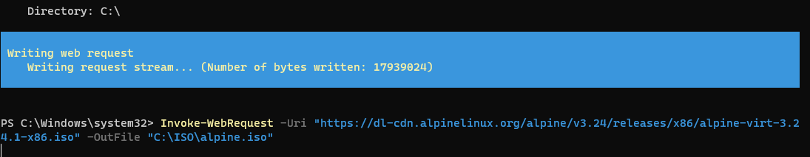
- Comprobamos que la descarga es correcta (debe rondar los 45-50 MB):
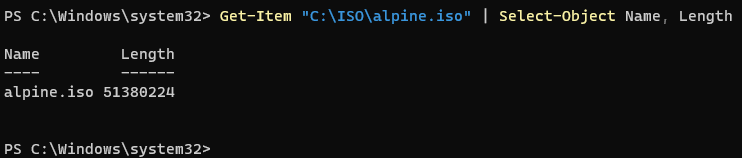
4.5.3 Crear la VM
Podemos usar el asistente para la creación de la máquina virtual.
- Para ello iremos a Hyper-V Manager → New → Virtual Machine"
- Damos un nombre a la máquina.
- Seleccionamos Generation 1.
- Asignamos 512MB de memoria RAM para la máquina.
- Conectamos la máquina a nuestro switch virtual.
- Disco duro virtaul. Ubicaremos el disco duro en la carpeta *VM creada anteriormente.
- Opciones de instalación del SO. En Image file ponemos la ubicación de nuestra imagen.iso.
- Finalizamos la creación de la máquina virtual.
Creación de la máquina virtual por línea de comando.
- Declarar la máquina
New-VM -Name "Cliente-1" `
-MemoryStartupBytes 512MB `
-Generation 1 `
-NewVHDPath "C:\VM\Cliente-1.vhdx" `
-NewVHDSizeBytes 4GB `
-SwitchName "LAN-Práctica-DHCP"
- Declarar la unidad de DVD y montar el ISO. !!! warning "Las VMs Generation 1 traen una unidad de DVD por defecto (a diferencia de Generation 2, donde hay que añadirla explícitamente con Add-VMDvdDrive). Por tanto, basta con usar Set-VMDvdDrive para montar la ISO en la unidad ya existente.
Set-VMDvdDrive -VMName "CLIENTE-1" -Path "C:\ISOs\alpine.iso"
Get-VMDvdDrive -VMName "CLIENTE-1" # debe mostrar el Path del ISO
- definir el orden de arranque (DVD antes que red)
4.5.4 Arrancar la VM
- Arrancamos la máquina virtual desde el Hyper-V Manager
- Esperamos a que se cargue el SO.
- La contraseña del login es root.
4.5.4 Verificar la conexión a la red a la asignación de la IP por parte del DHCP
-
Dentro de la consola de la VM confirmaremos el nombre real de la interfaz (eth0, enp0s3...):
-
Si aparece "state DOWN", levantaremos la interfaz.
-
Solicitamos una dirección IP con:
-
Como podemos ver, la solicitud no se realiza. Eso se puede deber a, al menos 2 causas.
No hemos asociado el Switch Virtual a nuestra máquina anfitrión. Cuando hemos creado el switch virtual hemos autorizado el VLAN ID → Lo deseleccionaremos. -
Solicitamos de nuevo una dirección IP:
4.6 Supervisión del proceso de broadcast y asignación (DORA) con Wireshark
- En esta parte supervisaremos la activida de red con Wireshark para ver el proceso DORA: DHCPDISCOVER → DHCPOFFER → DHCPREQUEST → DHCPACK.
- Wireshark es un popular analizador de protocolos de red de código abierto.
- Permite capturar y examinar en tiempo real el tráfico de datos que pasa por una red de comunicaciones, mostrando los paquetes individuales de información.
4.6.1 Descargar e instalar Wireshark
Por línea de comandos
Descargar desde la página oficial
4.6.2 Primeras capturas con Wireshark
- Una vez en ejecución la aplicación nos mostrará todos los adaptadores de red disponibles.
- Si no se detecta ninguna actividad de red, ponemos forzar tráfico haciendo ping desde la máquina virtual con Alpine Linux a otros dispositvos de la red. De esa manera también nos aseguraremos que todo funciona correctamente.
4.6.3 Capturas del DORA entre MV y DHCP
- Wireshark solo captura el tráfico a partir del momento en el cual se está ejecutando. Por ese motivo deberemos forzar el DORA entre MV y DHCP. Para ello forzaremos a la MV a devolver la IP asignada y negociaremos otra.
- Primero comprobaremos que la MV está conectada a la red. Si no lo está levantaremos el servicio.
- Si la MV estaba conectada, devolveremos la IP asignada.
- Forzamos la negociación de una nueva IP con el servidor DHCP.
- Aplicando filtros o simplemente ordenando los protocolos en orden alfabetico podremos ver las 4 fases del procesa DORA.
4.7 Creación de otra máquina virtual
Para comprobar que los conocimientos han sido asimilados correctamente. Lanzar otra máquina virtual y comprobar con Wireshark el proceso DORA.
La máquina virtual podrá ser del mismo tipo que la MV anterior o estar montada con un SO de Windows*.
Si elegís esta última opción podreís descargar un SO de uso limitado desde el centro de evaluación de Microsoft.
5 - Tarea RA1-def-2 - Instalación y configuración de un DHCP con Ubuntu Server en AWS
5.1 Objetivo de la práctica
- Desplegar un servidor DHCP en Ubuntu Server 22.04 LTS sobre AWS con virtualización anidada.
- En este primer paso instalaremos y configuraremos el rol DHCP Server en Ubuntu Server, y observaremos en tiempo real cómo varios equipos cliente obtienen su configuración IP (DHCPDISCOVER → OFFER → REQUEST → ACK), reservas, exclusiones, ámbitos (scopes), opciones de ámbito (DNS, puerta de enlace, etc.).
5.2 Arquitectura del laboratorio
- Instancia EC2 (m7i.large, 100GB, Unbuntu Server 24.04 LTS
- Virtualización KVM + QEMU + libvirt)
Explicación de los elementos de la arquitectura
- KVM + QEMU + libvirt es la pila de virtualización nativa de Linux y está pensada para virtualización de servidores.
- KVM → proporciona la virtualización mediante el kernel.
- QEMU → ejecuta/emula el hardware de las máquinas virtuales.
- libvirt → capa de administración de KVM/QEMU.
- virt-manager → interfaz gráfica para administrar libvirt.
Equivalencia con Windows Server
| Windows Server | Ubuntu Server |
|---|---|
| Hyper-V | KVM + QEMU |
| Hyper-V Manager | virt-manager |
| PowerShell / herramientas Hyper-V | virsh / virt-install |
| Virtual Switch | Redes virtuales de libvirt / bridges |
| VM | VM KVM/QEMU |
| VHDX | qcow2 / raw |
| Hyper-V NAT / switches | NAT / bridge de libvirt |
5.3 Instalación de GNOME en Ubuntu Server 22.04
- Para facilitar algunas etapas de la configuración de esta práctica, instalaremos la interfaz gráfica GNOME sobre la instancia de Ubuntu Server que hemos creado anteriormente.
- Instalar un escritorio gráfico no se suele recomendar en entornos de producción, por rendimiento y seguridad pero, dentro de un contexto de prácticas, puede estar plenamente justificado.
- GNOME propone un escrotorio completo o mínimo, siendo el completo el que instalaremos.
Instalación de GNOME
- Nos conectamos a nuestra instancia desde la consola de AWS.
- Instalamos las actualizaciones disponibles en los repositorios.
- Instalamos tasksel que nos permitirá instalar todo el entorno de escritorio en un solo paso.
- Instalamos GNOME
-
Configurar el archivo .xsession para el usuario. Aquí nos aseguraremos de que Xrdp sepa exactamente qué entorno de escritorio debe lanzar al autenticarse.
-
Evitar que GDM3 bloquee el arranque gráfico. En servidores en la nube (AWS/Cloud) sin monitor físico, GDM entra en conflicto con las sesiones remotas de Xrdp. Detendremos el servicio gdm3:
-
Reiniciar el servicio de Xrdp. Aplicaremos los cambios y reiniciaremos el demonio de escritorio remoto:
5.4 Primera conexión por escritorio gráfico a Ubuntu Server
- Lanzamos desde Windows la aplicación de conexión a escritorio remoto e introducimos la contraseña de nuestra máquina.
- Para la práctica, no tendremos en cuenta la advertencias de seguridad.
- Introducimos nuestras credenciales en la pasarela (servidor Xrdp).
- Si la sesión de ubuntu se ha cerrado, introducimos de nuevo las credenciales.
- Si todo ha ido bien, estaremos en el escritorio gráfico típico de Ubuntu Desktop.
5.5 Activar la virtualización de la CPU por la consola de AWS
Activar la virtualización de la CPU por la consola de AWS
- Abrimos el cloudshell de AWS y escribimos los siguientes comandos:
Cambiar la id por la id de vuestra instancia
# 1. Parar la instancia. También se puede hacer desde la consola de AWS.
aws ec2 stop-instances --instance-ids i-069fe851e6325d765
# 2. Esperar a que quede realmente parada
aws ec2 wait instance-stopped --instance-ids i-069fe851e6325d765
# 3. Activar nested virtualization con el comando correcto
aws ec2 modify-instance-cpu-options \
--instance-id i-069fe851e6325d765 \
--nested-virtualization enabled
# 4. Arrancarla de nuevo
aws ec2 start-instances --instance-ids i-069fe851e6325d765
Comprobar la virtualización de la instancia
- Desde la consola de AWS ejecutamos el comando
- También lo podemos comprobar desde la propia instancia con:
Si nos devuelve un valor mayor que 0, significa que la CPU expone las extensiones de virtualización (Intel VT-x/ AMD AMD-V).
- Otra manera sería usando la aplicación cpu-checker
5.6 Instalación de KVM y herramientas relacionadas
-
Instalaremos KVM y las herraminetas relacionadas con:
Explicación de las aplicaciones instaladas
- qemu-kvm → el hipervisor en sí.
- libvirt-daemon-system / libvirt-clients → capa de gestión (permite usar virsh, virt-install, etc.).
- bridge-utils → para redes puente entre las VMs anidadas.
- virtinst → herramientas para crear VMs desde línea de comandos (virt-install).
- virt-manager → interfaz gráfica de gestión (solo si disponemos de entorno gráfico).
5.7 Añadir usuarios a los grupos necesarios
- Para poder utilizar las opciones de virtualización deberemos añadir nuestro usuario a los grupos libvirt y kvm.
Desloggearse para que los cambios surtan efecto
5.8 Comprobar que el servicio libvirt está activo
-
Lo comprobaremos con:
-
Si, como en el caso de la imagen, nos muestra inactive, los activaremos con:
5.9 Verificar que /dev/kvm existe y los permisos de usuario del directorio
- Lo verificaremos con:
Nota
- rw-rw----+ → El propietario root y el grupo kvm tienen permisos de lectura y escritura (rw-).
- El símbolo + indica que tiene Listas de Control de Acceso (ACL) adicionales aplicadas.
5.10 Listar el hipervisor detectado
- Listaremos los servicios de virtualización con:
Nota
A esta altura de la práctica, que la lista esté vacía no es motivo de preocupación. Aún no hemos creado ninguna máquina virtual.
De no devolver un error tipo failed to connect to the hypervisor confirma que:
- libvirtd se está ejecutando correctamente.
- Nuestro usuario tiene permisos para comunicarse con el hipervisor.
- KVM/QEMU están listos para usarse.
Aplicación Virt-Manager
- Si nos conectamos por escritorio remoto, también podremos ver que el asistente (gráfico) de virtualización (virt-manager) está instalado.
- Escritorio de Virt-Manager
5.11 Crear la red aislada y el switch virtual sin acceso al exterior
-
Como el la práctica anterior, crearemos una red privada para evitar ingerencias de AWS a la hora de asignar IPs.
Importante
Al no incluir ningún bloque <forward> ni <ip>, esta red queda en modo isolated. Libvirt no le asigna su propio DHCP interno ni la conecta a internet.
-
Verificaremos que se ha creado switch virtual correctamente:
5.12 Configurar el switch virtual
-
A diferencia de la práctica de Windows Server aquí sí que podemos / debemos asignar un IP al switch virtual.
En estas condiciones, el switch virtual no es persistente. Eso quiere decir que lo tendremos que iniciar cada vez que retomemos la práctica
-
Para evitar de tener que asignar un IP al switch virtual y el posterior reinicio del servicio DHCP podremos intentar lo siguiente:
Los pasos a continuación solo se podrán hacer después de haber completado la práctica
Hacer el switch virtual persistente con un hook
Iniciar el servicio DHCP solo después de que el virtual switch tenga IP
- Abriremos un editor vacío que creará automáticamente
/etc/systemd/system/isc-dhcp-server.service.d/override.conf. - Dentro del editor escribiremos:
- Guardar y cierrar.
After= + Requires=→ obliga a que isc-dhcp-server arranque después de libvirtd, y no arranque en absoluto si libvirtd falla.ExecStartPre=/bin/bash -c 'for i in $(seq 1 15)→ reintenta cada segundo durante 15 segundos, y solo lanza dhcpd cuando confirma que la IP ya está cargada.
- Recargar systemd.
- Tras el reinicio, comprobar.
- Abriremos un editor vacío que creará automáticamente
5.13 Configurar la máquina anfitriona como servidor DHCP
-
Instalamos el servicio DHCP
-
Definir qué interfaz debe escuchar el servidor DHCP Para ello tendremos que editar el archivo
/etc/default/isc-dhcp-serverBajamos hasta la línea INTERFACESv4="" y ponemos el valor Switch-Virtual
5.14 Configurar el ámbito de nuestro servidor DHCP
-
Para configurar el ámbito editaremos el archivo
/etc/dhcp/dhcpd.conf -
Añadiremos al final:
5.15 Arrancar el servicio DHCP
-
Para arrancar el servicio y comprobar que el servicio se ha levantado correctamente usaremos:
Si falla al arrancar
- Revisar si
INTERFACESv4apunta a una interfaz que no existe todavía o el archivodhcpd.conf. - Si hay un error de sintaxis usar:
5.16 Descargar la imagen de las máquinas virtuales cliente
Igual que en la práctica de Windows Server, usaremos Alpine Linux por su ligereza (256–512 MB por VM).
-
Podemos usar el escritorio gráfico para descargar la iso del SO de Alpine Linux pero, lo haremos por línea de comando.
Nota
- El proceso QEMU que ejecuta la VM se lanza con el usuario libvirt-qemu (por aislamiento/seguridad). Ese usuario no tiene permiso para atravesar el directorio /home/ubuntu.
- Por ese motivo usaremos el directorio
/var/lib/libvirt/.
5.17 Crear la VM con virt-install (consola de texto, sin necesidad de GUI)
- Para crear nuestra primera VM usaremos el script:
Notas
- La opción
--console pty,target_type=serialnos conectará automáticamente a la consola serie de la VM en la misma terminal SSH. - En el prompt
localhost login:entraremos comorootcon la contraseña root. - Para salir de la consola serie sin apagar la VM cerraremos la ventana con la que estamos loggeado.
5.18 Conectarse por consola serie a la VM y comprobar la interfaz de red
-
Para conectarnos de nuevo a la VM y configurar la interfaz de red usaremos:
Nota
El comando
sudo virsh start Cliente-1solo es necesario si la VM está apagada. -
Comprobaremos el estado de la interfaz con:
-
Si tenemos el
eth0en DOWN, lo levantaremos con:
5.19 Solicita la IP por DHCP
-
Solicitaremos un IP al DHCP con:
5.20 Gestión de las máquinas virtuales por consola
- Para acceder a la ayuda de virsh teclar:
-
Comandos más habituales
Comando Qué hace virsh destroy <Cliente-1>Apagado forzoso e inmediato virsh shutdown <Cliente-1>Apagado ordenado (envía señal ACPI, espera a que el SO se apague solo) virsh reboot <Cliente-1>Reinicio ordenado (equivalente ACPI) virsh undefine <Cliente-1>Elimina la definición de la VM (metadatos) virsh undefine <Cliente-1>--remove-all-storageElimina la definición de la VM y del disco --remove-all-storage virsh list --all Lista todas las máquinas y su estado virsh console <Cliente-1>Conexión por consale a la MV
5.21 Segundo cliente
- Repetir los pasos anteriores y crear una segunda VM con nombre
Cliente-2.
5.22 Ver el proceso de broadcast y asignación DORA
En este caso no usaremos wireshark sino el propio log del servicio DHCP.
-
Nos conectamos a nuestra instancia anfitrión y lanzamos el log.
No cerraremos la ventana, lo dejamos corriendo.
-
Abrimos otra conexión con nuestra instancia y la usaremos para conectarnos a nuestra(s) MV.
-
Levantamos la interfaz de red con:
-
Iniciamos el proceso DORA:
-
-
Volvemos al log dónde podremos ver el DORA.
5.23 Leases concedidos
-
Con el siguiente comando podemos consultar el registro de concesiones (leases) del servidor DHCP, donde se muestra qué dirección IP tiene asignada cada cliente, la duración de la concesión y su fecha de inicio y expiración.
Ejercicios adicionales
- Reservas por MAC:
Add-DhcpServerV4Reservation. - Exclusiones dentro del ámbito:
Add-DhcpServerV4ExclusionRange. - Liberar y renovar (contraste DISCOVER completo de 4 paquetes vs. renovación de 2 paquetes): en Alpine,
udhcpc -Rpara liberar y volver a pedir. - Agotamiento del ámbito: crear un ámbito de prueba muy pequeño (p. ej. solo 2-3 IPs) para que los alumnos vean qué ocurre cuando un cliente no puede recibir oferta.